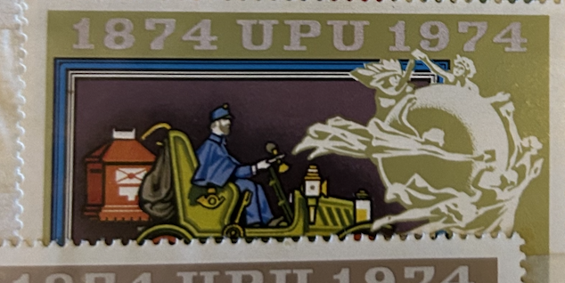
| SOURCE | TITLE| IMAGE MATCH | click to source page |
| Osta | Ungari mark "Autod", 1974 a., templiga (212326082) - Osta.ee | 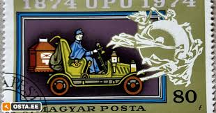 |
| Shutterstock | 9+ Thousand Horse Postage Stamps Royalty-Free Images, Stock Photos & Pictures | Shutterstock | 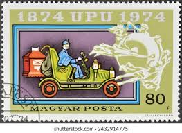 |
| PicClick DE | Briefmarken Ungarn 1874 ZU VERKAUFEN! - PicClick DE | 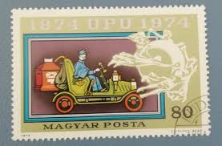 |
| Dreamstime.com | 121 Centenary Universal Postal Union Stock Photos - Free & Royalty-Free Stock Photos from Dreamstime | 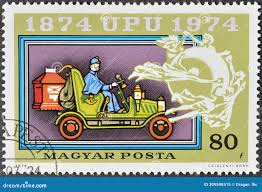 |
| PicClick AU | HUNGARY MAGYAR POSTA 1961 Castles & Fortresses 80F Brown Egervar - Used $1.15 - PicClick AU | 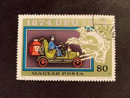 |
| Todocolección | se)1974 hungary, centenary of the universal pos - Buy Antique stamps of Hungary on todocoleccion | 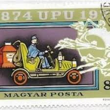 |
| eBay | HUNGARY MAGYAR POSTA POSTAL UNION Stamps (10) | eBay | 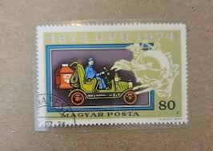 |
| Alamy | Universal postal union hi-res stock photography and images - Page 4 - Alamy | 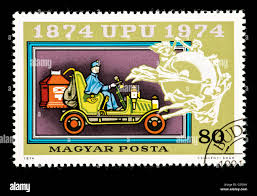 |
| Todocolección | hungria 1979 ivert 2690/5 *** fauna - animales - Buy Antique stamps of Hungary on todocoleccion | 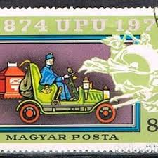 |
| eBay | F (Fine) European Stamps for sale | eBay | 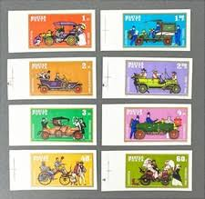 |
| Dreamstime.com | P Hungarian Stock Photos - Free & Royalty-Free Stock Photos from Dreamstime | 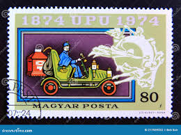 |
| Today I bought this stamp from the car boot, what would it be worth, thank you very much | 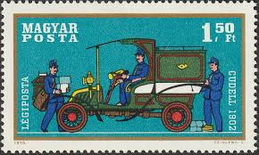 | |
| Mystic Stamp Company | C296-303 - 1970 Hungary - Mystic Stamp Company | 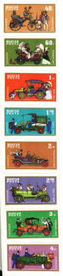 |
| eBay | Hungary 2282-2287,C349 imperf, MNH. Michel 2945B-2951B. UPU-100, 1974. | eBay | 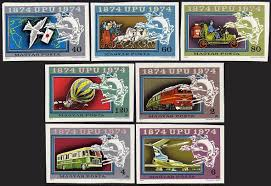 |
| Mystic Stamp | This Day in History | Page 120 of 236 | Mystic Stamp Discovery Center |  |
| eBay | Angola, Scott 158I, Ceres, 1921-1926, MH | eBay | 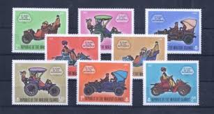 |
| 130 MAILED IT ideas to save today | postage stamps, stamp collecting, postal stamps and more | 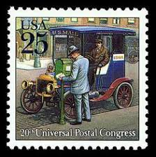 | |
| Etsy | Antique Car Hungarian Postage Stamps / Ford Model T, Peugeot, Rolls-royce / Decoupage Material, Collage Art Supply, Scrapbook Embellishment - Etsy Canada | 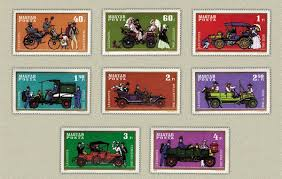 |
| Mystic Stamp Company | 03-09-1858 Street Mailbox.indd | 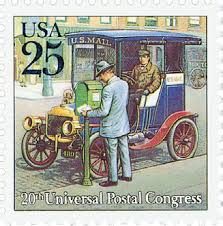 |
| eBay | Cars Postage Hungarian Stamps for sale | eBay | 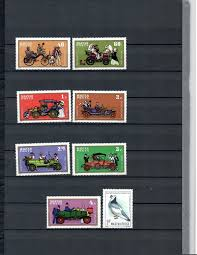 |
| Amazon.com | Amazon.com: FRD (FR.Germany) 1268 (Complete.Issue) unmounted Mint/Never hinged ** MNH 1986 100 Years Automotive (Stamps for Collectors) Cars/Road Traffic : Toys & Games | 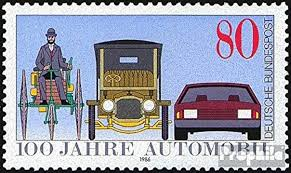 |
| eBay | BL) HUNGARY 1970 Cars Set of 8 used | eBay | 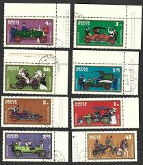 |
| eBay | 108750] Hungary 1970 Historical motor vehicles Imperf. MNH | eBay | 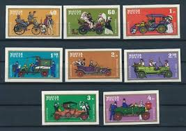 |
| What is the value of this stamp? | 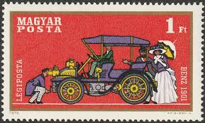 | |
| Find Your Stamps Value | Value of australia 22c stamps | 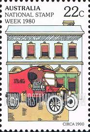 |
| eBay | Hungary #2017/2059, B276/287, C287/303 MNH, 21 Cmplt Issues, Scott Value $32.80 | eBay | 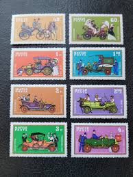 |
| eBay | Lot of 10 postcards for 500 years of post in Germany - VERY RARE! | eBay | 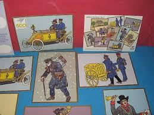 |
| Shutterstock | 5+ Thousand Postage Stamp Machine Royalty-Free Images, Stock Photos & Pictures | Shutterstock | 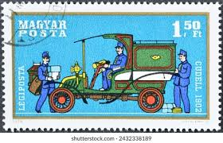 |
| stampphenom.com | Hungary 1970 Cuddel Mail Truck 1902 – StampPhenom | 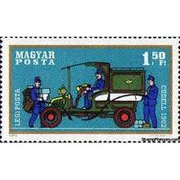 |
| Shutterstock | 32 Cudell Royalty-Free Images, Stock Photos & Pictures | Shutterstock | 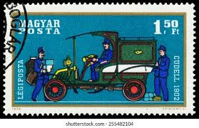 |
| Invaluable.com | Michael Hague Paintings & Artwork for Sale | Michael Hague Art Value Price Guide | 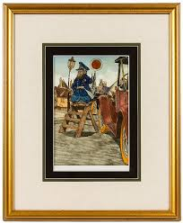 |
| TouchStamps | Issue: National Stamp Week (Australia, 1980) - TouchStamps | 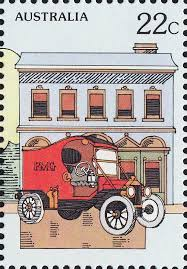 |
| Etsy | Antique Car Hungarian Postage Stamps / Ford Model T, Peugeot, Rolls-royce / Decoupage Material, Collage Art Supply, Scrapbook Embellishment - Etsy | 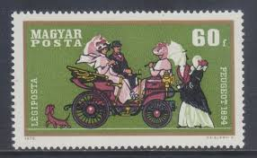 |
| Etsy | Buy FIVE 25c City Mail Delivery Stamp .. Vintage Unused US Postage Stamps | Mailman | Mailbox | Wedding Invitation Postage | Save the Date Online in India - Etsy | 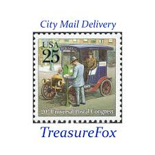 |
| eBay | US FDC #2434-2437 USPS Maximum Card 1989 DC UPU Traditional Mail Set of 4 | eBay | 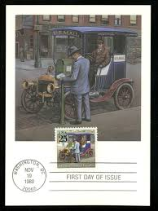 |
| prints-online.com | King Victor Emmanuel III & President Loubet 1904 Print. Art Prints, Posters & Puzzles from Mary Evans | 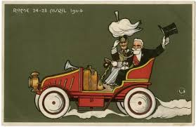 |
| eBay | VALENTINE HOLIDAY HEADLESS ROMANCE CARRIAGE POSTCARD (c. 1907) | eBay | 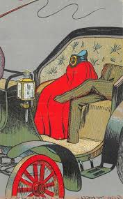 |
| Dreamstime.com | CIRCA 1986: Stamp Printed in USA Shows 36th President Lyndon B. Johnson (1963-1969) Editorial Stock Image - Image of america, century: 394470804 | 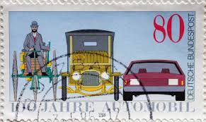 |
| eBay | Germany, Postage Stamp, #1515 (2 Ea) Mint NH, 1987 Bicycle Postman (AB) | eBay | 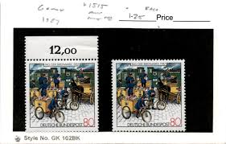 |
| Dreamstime.com | 116 Upu Serie Stock Photos - Free & Royalty-Free Stock Photos from Dreamstime | 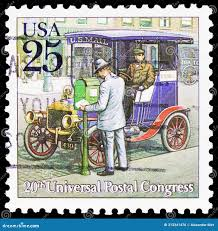 |
| eBay | Hungary Europe USED SET CARS Stamps LOT (Hungary 874) | eBay | 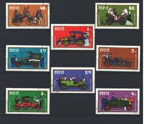 |
| eBay | UPU World Stamp Expo '89, set of 9 presentation maxicards FDC | eBay | 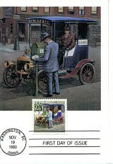 |
| Shutterstock | Hungary Circa 1970 Set Stamps Printed Stock Photo 255482098 | Shutterstock | 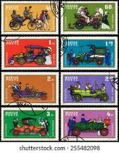 |
| HipPostcard | Old Postcard Fancy Geese Motoring Automotive Beauvais Moullot Marseille | Topics - Transportation - Automotive - Other, Postcard / HipPostcard | 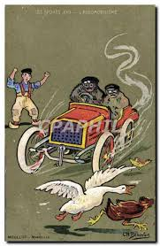 |
| australianstrampcatalogue.com | http://www.australianstrampcatalogue.com | 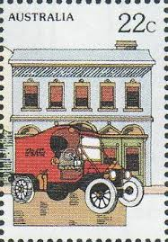 |
| Etsy | SELLO FIVE 25c City Mail Delivery .. Vintage Sellos postales de EE. UU. no utilizados / Cartero / Buzón / Envío de invitación de boda / Guardar la fecha - Etsy España | 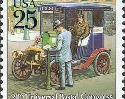 |
| eBay UK | Full Set Of 8 Magyar Posta. 1970 SG2504/2511 ~ OLD MOTOR CARS ~ Mint | eBay UK | 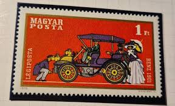 |
| Fine Art America | Automobiles Eugene Brillie Vintage Poster 1905 Yoga Mat by Vintage Treasure - Fine Art America | 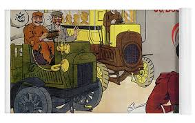 |
| Alamy | Benz tricycle hi-res stock photography and images - Alamy | 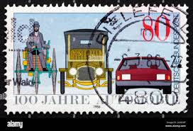 |
| Blogger.com | Just A Car Guy: Fernand Fernel (1872-1934) | 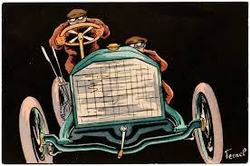 |
| OLX | MAĐARSKA stari automobili - Markice - OLX.ba | |
| eBay | Hungary 1970 set Cars/Automobile stamps (Michel 2564/71) MNH | eBay | |
| Alamy | Tricycle benz hi-res stock photography and images - Alamy | |
| Ruby Lane | 3 German PFB New Year's Postcards Heavily Embossed Family in Touring . For Sale at Ruby Lane | |
| University of Rochester | University Archives | River Campus Libraries | |
| eBay | World Stamp Expo 89 Washington DC US Postal Service continental | eBay | |
| eBay | FIVE Brand New American Made ANTIQUE TOY TOUR of EUROPE T-Shirts ~ Size LARGE | eBay | |
| Everypixel.com | Saloon car Images - Search Images on Everypixel | |
| eBay | Postcard Red Robe Santa Claus Green Car Snow Toys Red Robe Missent | eBay | |
| LiveAuctioneers | Jan Balet Signed And Numbered Lithograph |